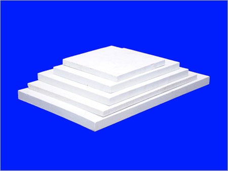

Pressed Batts
Pressed Batts are known as refractory tiles or slabs that are widely used as components of the kiln car superstructure. They are also designed to support ware during the furnace firing cycle. These Different Size Pressed Batts are available in sizes from 1000mm x 1000mm, 1800mm x 840mm, etc. In addition, they can be availed in square, rectangular, and other shapes as per the demands. They are the excellent solution to insulation without changing the core structure.

Refractory Batts
Having fine finish, accurate dimensions and sturdy design, the provided Pressed Batts are highly demanded among our clients. These batts are highly acknowledged in furniture and home furnishing industries for forming or designing different kinds of furniture. The offered batts manufactured using the best quality clay and sophisticated techniques. In addition, we offer these Pressed Batts to our clients at pocket friendly rates.

Cordierite Batts
Offered Cordierite Batts are best to be used in various industries such as furniture, sanitary, construction and metal working. These batts are manufactured using the finest grade clay and pioneering techniques. Known for excellent heat tolerant, extended durability and supreme finish, these batts are used for rendering excellent support to an item. Moreover, the provided Cordierite Batts can be availed by our esteemed patrons at cost effective rates.

Extruded Batts With Interlock
Extruded Batts With Interlock are designed with precise and similar holes that run the length of the cross section. These batts are designed employing advanced technology and high pressure vacuum extrusion to ensure the highest standard of evenness, flatness and dimensional accuracy. They are widely used in the manufacturing sectors of sanitary ware and glass panels. In addition, they are also used in the sectors of biscuits and firing of tableware.

Interlock Extruded Batts
Interlock Extruded Batts are designed with holes running the cross sectional length. They are developed to provide excellent results in the domain of sanitaryware and glass panel industries. Employing modern high pressure vacuum extrusion processes, they are developed before being cut. This process is used in the production to ensure to provide the highest standard of flatness. They are available to impart superior thermal shock resistant to enhance the longevity of insulating firebricks as well as ceramic fibre linings.

Extruded Batts
Extruded Batts are designed using vacuum extruding technology to provide better support and performance to the new generation refractory kiln. They are designed with excellent loading capability along with excellent creep resistant design at high temperature. With long service life and energy saving, it provides the best performance for sanitary ware as well as glass-ceramic sintering. They are available with sturdy and highly durable design to provide maximum strength.

Refractory Batts
The durability of the kiln depends on the usage conditions and robustness standards of the batts. This Corner Cut Rib Step Batts are designed to meet every kiln atmosphere with its ability to withstand high temperatures during firing. They are developed to fit the needs of different firing curve as well as cooling methods. Their light weight yet maximum sturdiness ensure to provide the best performance that preserves the quality, shape and durability of the material.

Ceramic Batts
Wash Basin Setter Perforated Batt is designed to mould the wash basin in kiln during firing. It is designed from high quality ceramic and other raw materials to add strength and sturdiness. This is designed in precise dimensions t o provide support as well as maintain the shape of the wash basins. It is designed to withstand high temperatures with its high purity, shock resistant design and maximum durability. This comes with optimum thickness to provode complete protection to the materials.

White Saggar Tray
White Saggar Tray is considered as container widely used in kilns to provide protection or support to products. It is used during firing like glost or biscuit firing or powder calcination to ensure to lend optimum support to the products like glass, minerals, etc. This is available in flat design with holes in the base across the cross sectional lining. It can be availed in different materials from RAC, RON, TUA to TEN according to the uses and applications.

Saggar Tray With Cover
Saggar Tray With Cover is designed from high quality RON, TUA, RAC to TEN to ensure maximum efficacy and strength. It is available in large design in square and rectangular shape with cover to ensure to provide high performance. This is designed to provide protection to the materials like glass and ceramics from the direct contact of flames and damage by kiln debris during firing in the kiln. It can be used in glost or biscuit firing and other processes.

Saggar Tray
Saggar Tray is a small non-flammable tool used during firing in the kiln to support crowns and bridges. It is available in highly pure Al2O3 as well as mullite material to ensure maximum strength. It is able to withstand maximum service temperature of 1800 degree Celsius. In addition, its excellent thermal and shock resistant design makes it ideal to be used for years to come without any abrasion, cracks and damage.

Open Saggar Tray
Open Saggar Tray is widely used in the domain of firing of pottery. This is a kind of kiln furniture developed in the design of ceramic boxlike container. It is developed to provide complete protection to the ware from any kind of damage caused due to high temperatures. This is designed from optimum quality raw materials such as mullite ceramic silicon carbide, alumina ceramic, cordierite ceramic, etc. This is designed to provide to protect a range of ware from gases, kiln debris, high temperature etc.